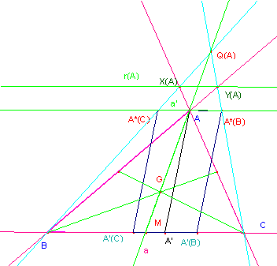
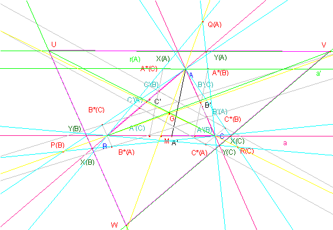

De
Investigación (EXTRA), propuesto por Juan Bosco
Romero Márquez, profesor colaborador de la Universidad de Valladolid.
Problema
300.-
Dado el triángulo ABC, y las cevianas arbitrarias AA´, BB´ y CC´, desde los vértices A,
B y C, a los lados BC, AC y AB, respectivamente.
Sobre la ceviana AA´, (lo mismo para las
demás), hacemos la siguiente construcción:
Desde A´, llevamos a su derecha e izquierda, la misma
cantidad fija -pueden ser distintas, para B´, y C´-,para obtener sobre el lado BC,
los puntos A'(B) y A'(C).
Por A, trazamos la paralela a BC, y por
A'(B) y A'(C) la paralela, a AA', respectivamente. De esta forma obtenemos el
paralelogramo A'(C)A'(B)A*(B)A*(C), y los similares,
para BB´y CC´, respectivamente.
Definimos los siguientes puntos por los pares de rectas que contienen a los dos
segmentos que se indican:
X(A) =B A*(C)∩AC,
Y(A)= CA*(B) ∩AB, y,
lo mismo X(B), Y(B), X(C), Y(C), para los otros dos vértices.
Por último
construimos las dos ternas de puntos Q(A)= BA*(C) ∩ CA*(B), P(B), y R(C), de forma análoga.
Y la terna de
puntos, U= X(A)Y(A)∩X(B)Y(B), V
= X(A)Y(A)∩X(C)Y(C) y W = X(B)Y(B) ∩X(C)Y(C).
Se pide: a)
Demostrar que los puntos Q(A), P(B) y R(C),
están en las medianas
correspondientes a los vértices, A, B y C. (rectificado el
1 de marzo de 2006)
b) Hallar los
lugares geométricos de los puntos Q(A), P(B) y R(C)
cuando A' , B', y C' recorren los lados BC, AC y AB.
c) Demostrar que el triángulo UVW es homotético al
triángulo ABC. Calcular el centro y la razón de la homotecia.
Romero,
J.B. (2005): Comunicación personal.
Solución deSaturnino Campo Ruiz,
profesor del IES Fray Luis
de León de Salamanca

a) Veamos que el punto Q(A) yace en la mediana
desde A.
Si
consideramos este punto como vértice de la proyección de la recta a’=A*(B)A*(C)
sobre la recta a= BC tenemos que el punto
común A∞ (el punto
del infinito, por ser paralelas) es fijo: se proyecta en sí mismo. El vértice A es el punto medio del segmento A*(B)A*(C); su cuarto armónico
es, por tanto A∞. La
proyección conserva la razón doble y por ello la cuaterna armónica (A*(B),
A*(C), A, A∞) se transforma en
otra cuaterna armónica (C, B, M, A∞),
lo cual implica que M -proyección de A desde Q(A)- sea necesariamente el punto medio de BC, y por tanto Q(A) pertenece a la
mediana.
b) Cada punto A’
(fijado un segmento a ambos lados) sobre BC
induce un punto Q(A) sobre la mediana. Por tanto al variar
éste sobre el lado el punto asociado recorre la mediana. Así pues el lugar
geométrico buscado es la propia mediana (la recta completa, no el segmento). En
el caso límite en que A’= A∞,
el punto definido es M. (Y también si
A’ fijo y el segmento alrededor de él
tiene longitud infinita).
c) Si el punto Q(A) está en la mediana ya hemos visto en problemas
anteriores (nº 68) que sus proyecciones desde los vértices B y C sobre los lados,
puntos X(A) e Y(A), están sobre una recta paralela a la
base BC. Como esta recta contiene los
vértices UV resulta que el triángulo UVW tiene sus lados paralelos al
triángulo CBA, siendo por ello homotéticos.
El
dibujo completo queda según puede verse en la última figura:
